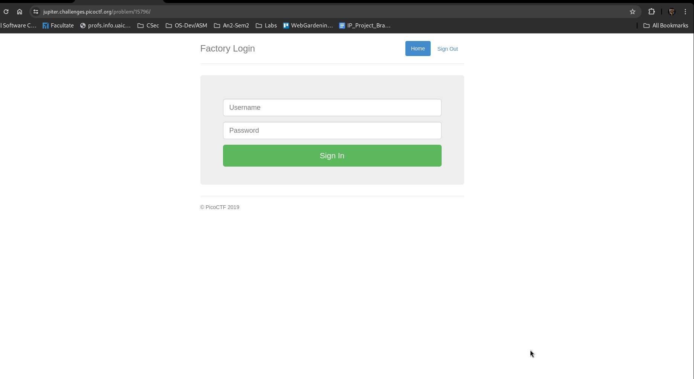
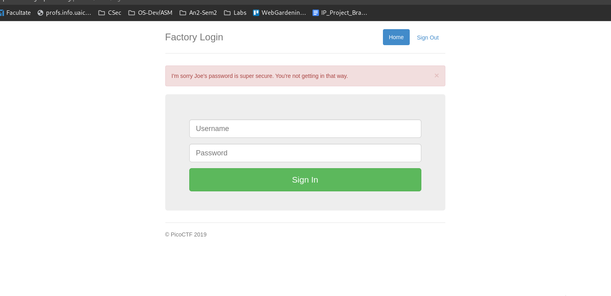
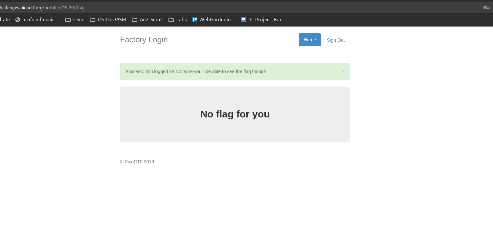
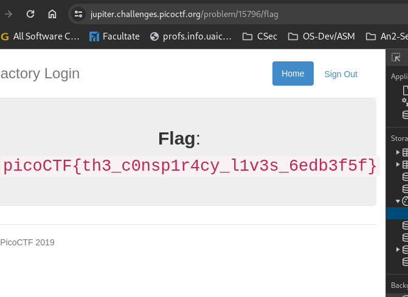
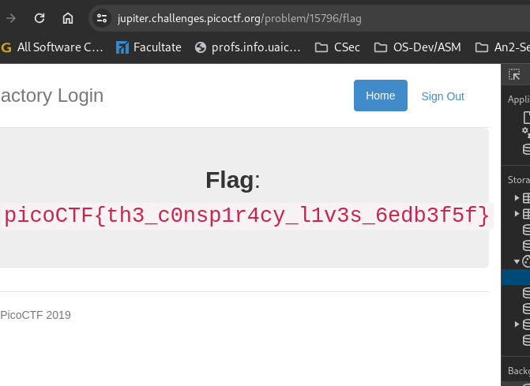
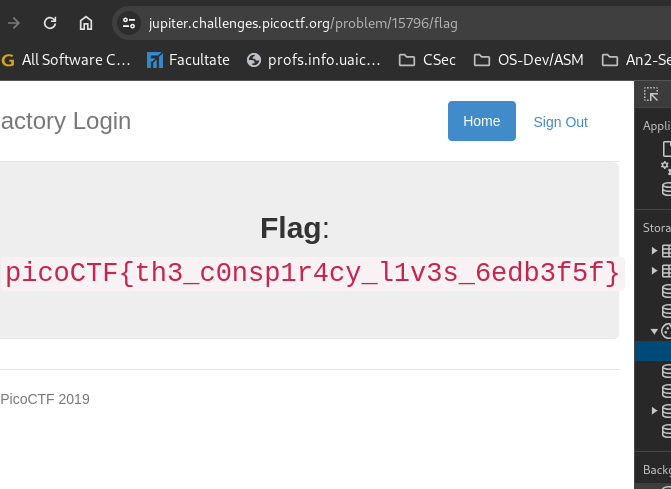

Description
The factory is hiding things from all of its users. Can you login as Joe and find what they've been looking at? https://jupiter.challenges.picoctf.org/problem/15796/ (link) or http://jupiter.challenges.picoctf.org:15796
The login page looks like this:

I tried to login as "Joe" with password "1234" and got this:

So i ll try to login as somebody else

This worked.Now let's look at the cookies.
 Let's change the admin value to "True".

This worked and we got the flag.
Let's change the admin value to "True".

This worked and we got the flag.
Let's change the admin value to "True".

This worked and we got the flag.